내가 좋아하는 하늘
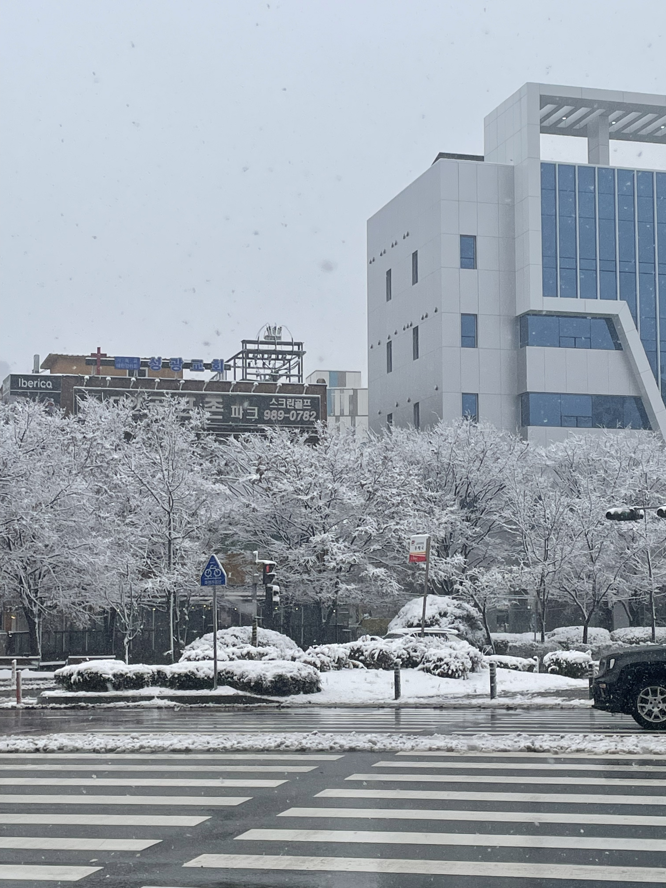
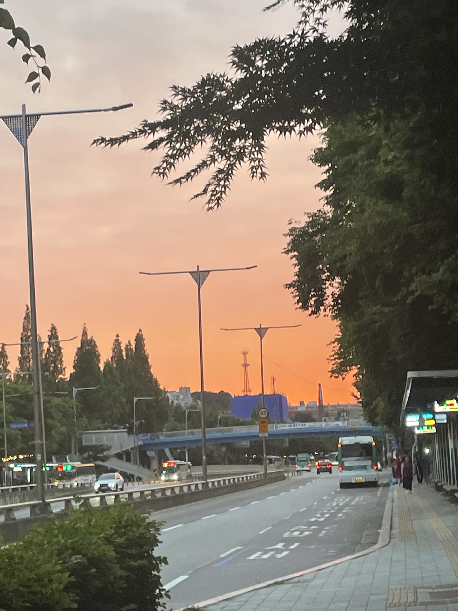
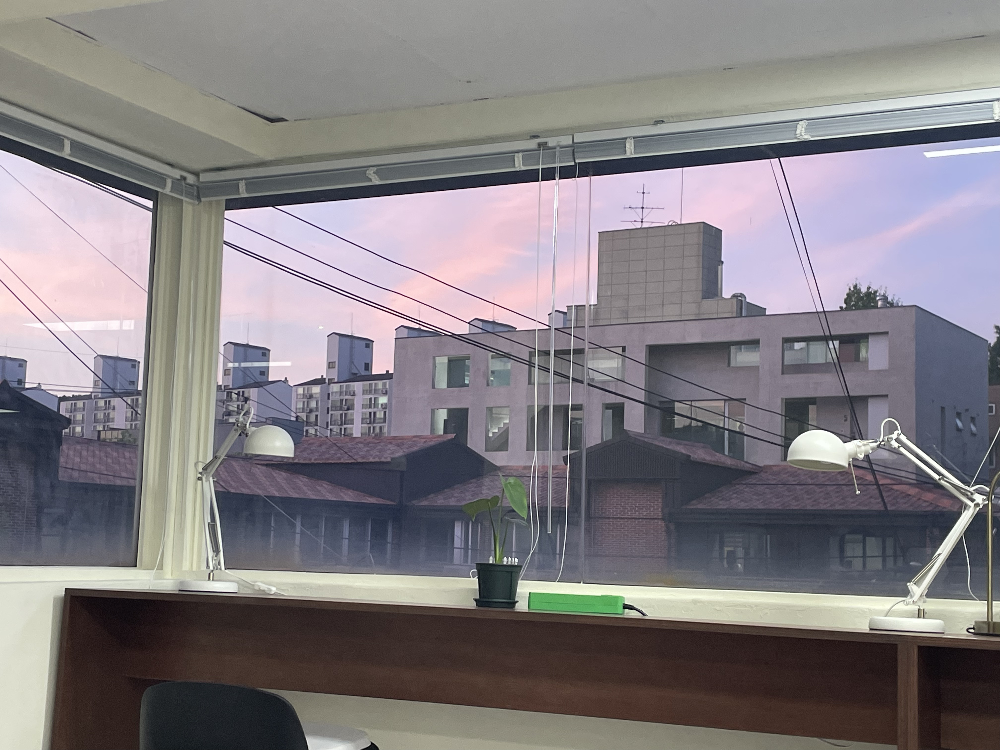
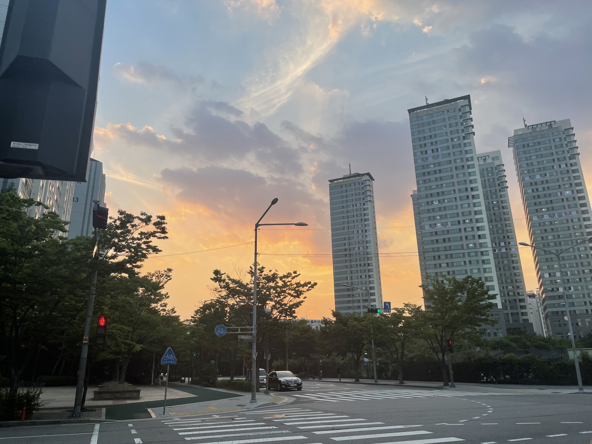
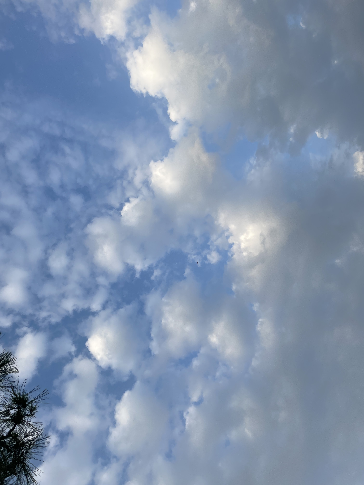
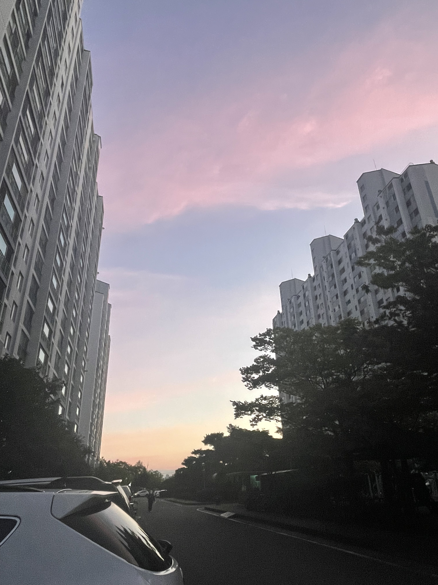
 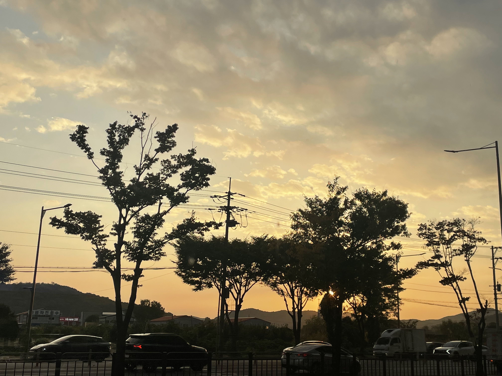
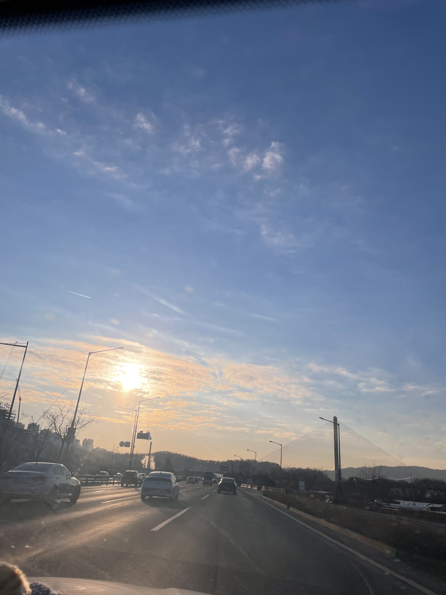
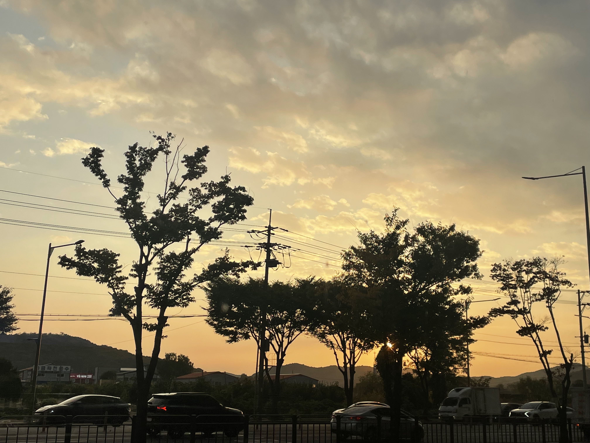
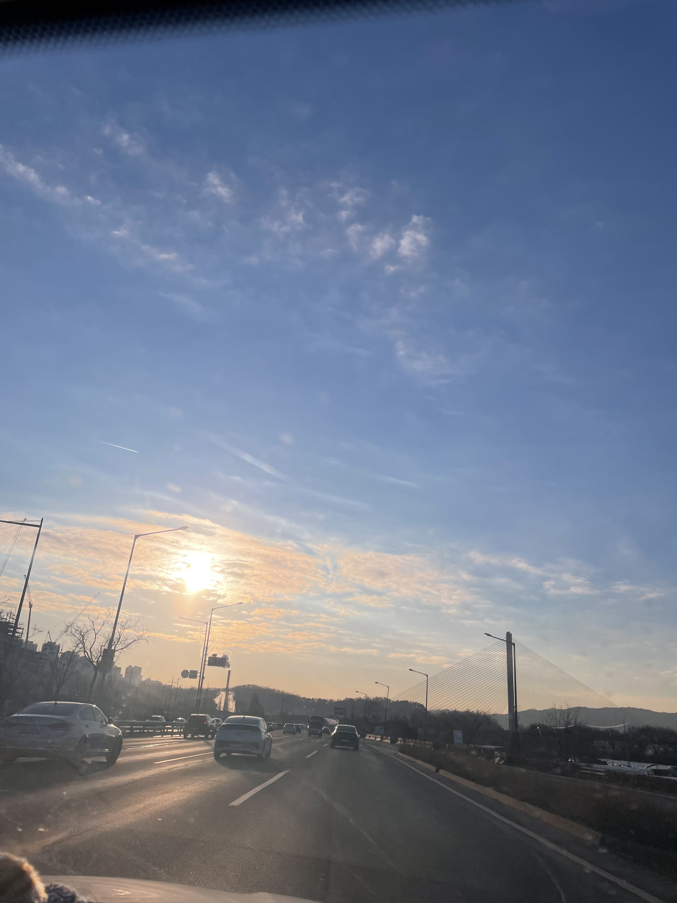
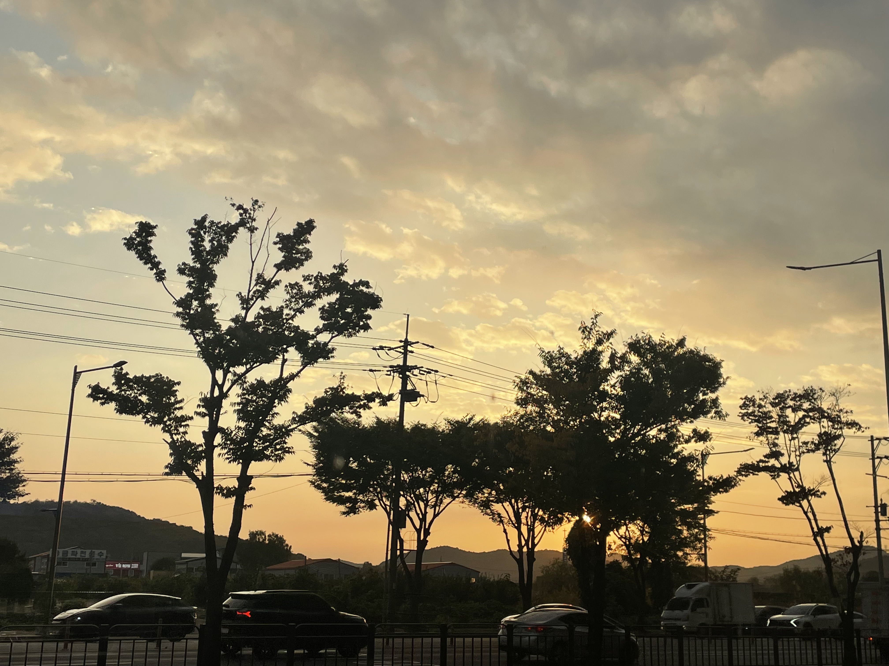
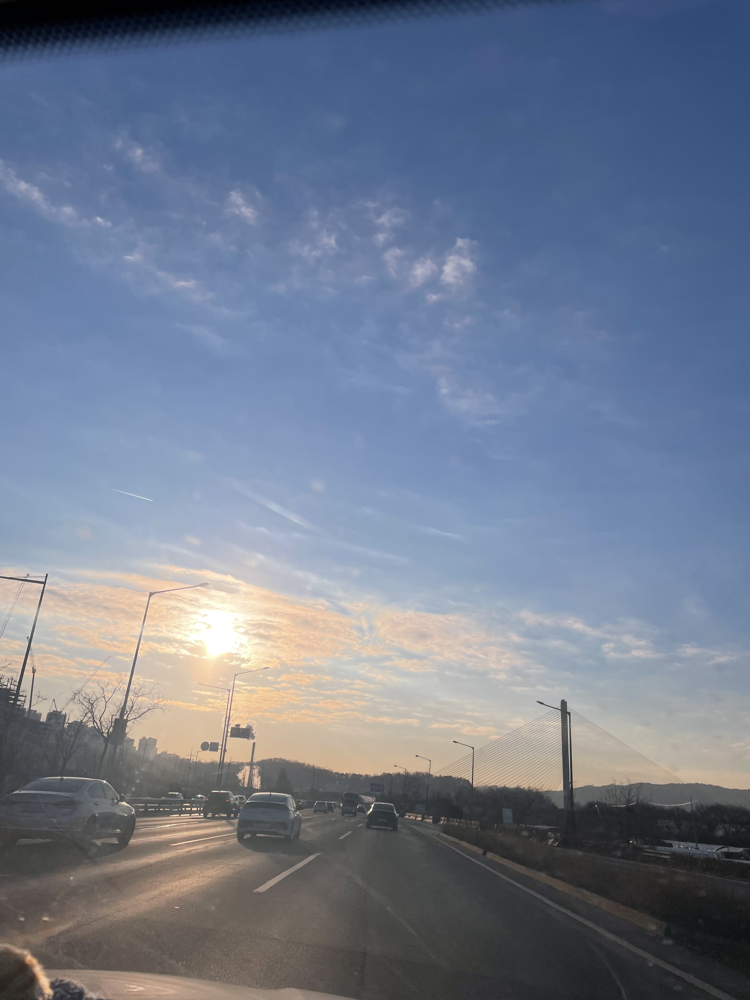
안녕하세요, 저는 후회없는 삶을 살고 싶은 메이토에요. 한 번 뿐인 삶, 제가 원하는 건 그 끝이 실패라고 하더라도 꼭 도전하고 싶고, 개발도 그 도전 중 하나입니다. 저는 혼자 하는 일도 좋아하지만 사람들과 함께 하는 일을 더 좋아해요🥰 우테코에 와서도 많은 사람들과 즐겁게 지내고 싶어서 말을 먼저 걸거나, 인사를 먼저 하는 경우가 많답니다. 개발자가 되었을 때도 이런 사람들과의 관계 유지, 소통에 있어서 제 강점을 살리고 싶어요!
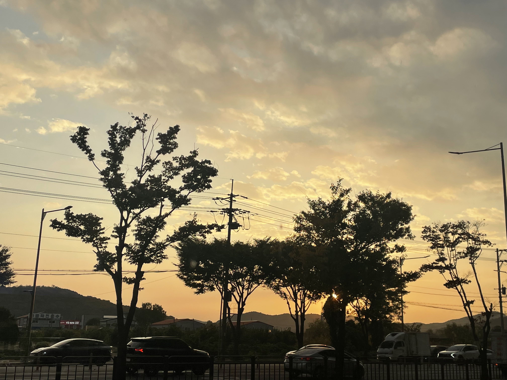
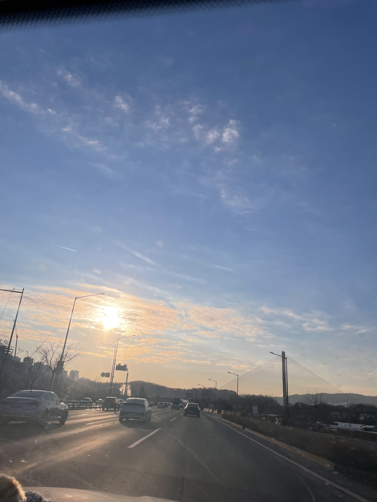

책의 표지 처럼 외게인 혹은 신에 대한 이야기가 많이 나오는데, 모두 사랑이야기 단편을 모아놓은 소설집이다. 나는 그 중 '세상 모든 노랑' 이라는 단편 소설을 좋아하는데, 노란색을 보지 못하는 색각 이상인 '영'과 노란색을 주관하는 신 '랑'의 사랑이야기로 이별로 끝이나지만, 사랑함에 있어 서로에게 없는 점을 채워줄 수 있다는 점에서 사랑이란 무엇인지에 대해 생각하게 해준 작품이다.

구와 담의 사랑 이야기로 사랑하는 연인의 갑작스러운 죽음을 다룬 책이다. '만약 네가 먼저 죽는다면 나는 너를 먹을거야. 그래야 너 없이도 죽지 않고 살 수 있어.' 라는 대사가 가장 유명한 주인공의 대사로 담은 갑작스러운 구의 죽음을 받아들이는 과정에서 다소 잔인하지만, 구의 시체를 먹는 모습을 보인다.